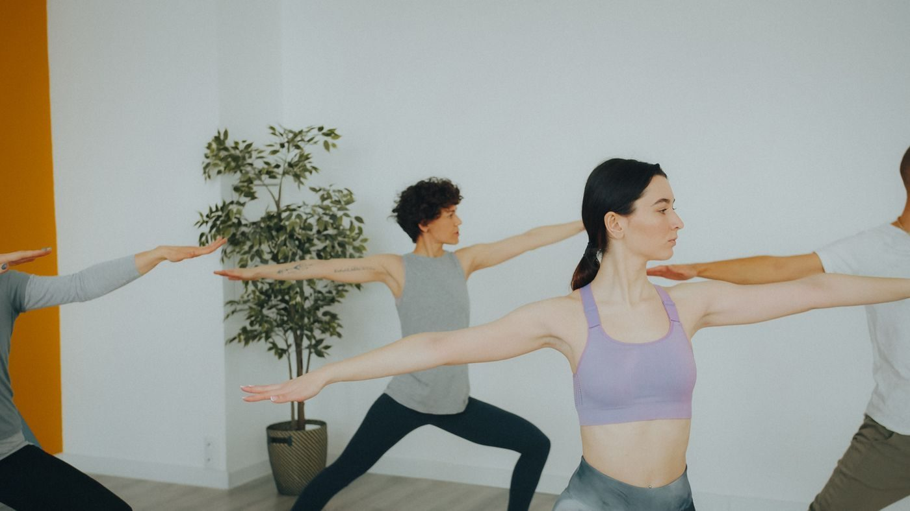

Buffalo, New York
Yoga, qigong, and meditation in Buffalo
A yoga studio at 133 Grant St in Buffalo offering hatha yoga, qigong, meditation, and pranayama, with Vinyasa Flow, Yin, and Gentle Yoga classes.

Buffalo, New York
A yoga studio at 133 Grant St in Buffalo offering hatha yoga, qigong, meditation, and pranayama, with Vinyasa Flow, Yin, and Gentle Yoga classes.
Shakti Yoga is a yoga studio at 133 Grant St in Buffalo. Research lists hatha yoga, qigong, meditation, and pranayama, with Vinyasa Flow, Yin, and Gentle Yoga among the classes.
